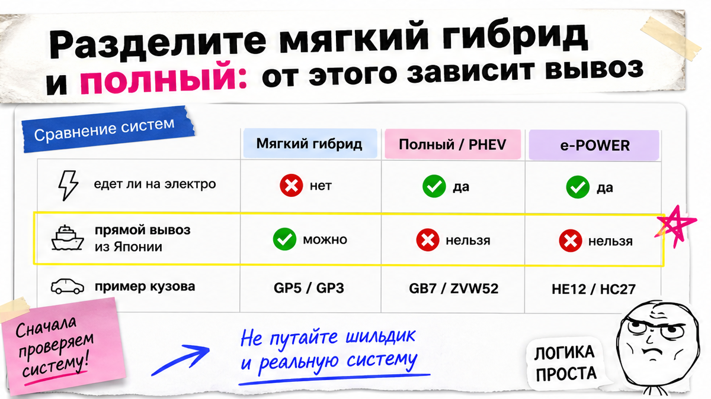
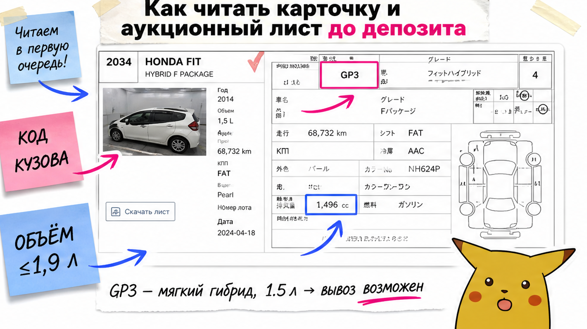
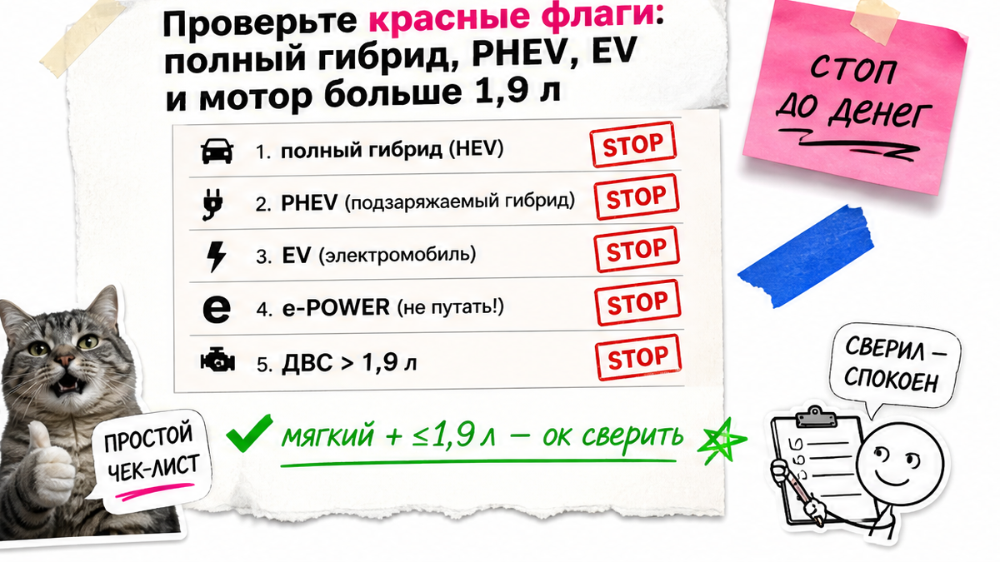

На скрине Honda Freed "гибрид", рука тянется к депозиту. В листе кузов GB7 – полный e:HEV, прямой вывоз закрыт. У соседа Freed GP3: мягкий гибрид, едет обычным ролкером. Главная боль новичка – ошибка с типом Hybrid: депозит за полный лот дорого обходится, а лист без шпаргалки сложно читать. В 2026 привезти гибрид можно, но не любой Hybrid: мягкий тип и ДВС до 1,9 л. Ниже чеклист до денег: получите вердикт по кузову, сможете отсеять стоп-лот и выберите только мягкий вариант до оплаты.
TL;DR / Быстрый инсайт: Прямой вывоз в 2026 открыт для мягких гибридов с мотором до 1,9 л. Полный гибрид, PHEV, электромобиль и e-POWER – стоп для прямого маршрута. Не смотрите на слово Hybrid в объявлении: решают код кузова и то, умеет ли машина ехать на электротяге сама. Депозит – только после зелёного вердикта по листу.
С августа 2023 Япония ограничила вывоз в РФ машин с мотором больше 1,9 л, полноценных гибридов и электромобилей. В ноябре 2024 формулировки уточнили: мягкие гибриды изначально не считались "полноценными" – электромотор только помогает, сам машину не везёт. Экспортёры до этого часто боялись любого слова Hybrid в документах. Мы в Авто-Сейлс во Владивостоке разбираем такие лоты до ставки, а не после беды с депозитом.
Если вы новичок и боитесь двух крайностей – "всё запретили" или "внесу деньги за Prius / Note e-Power наудачу" – начните с простого правила: сначала тип системы и код кузова, потом деньги. Проблема решается одним порядком действий, без "магии брокера".

На пальцах: мягкий гибрид (mild hybrid) – это обычный бензиновый мотор плюс маленький электропомощник. Он подкручивает старт и экономит топливо, но сам машину не везёт. Полный гибрид, PHEV и e-POWER умеют ехать на электротяге или крутят колёса электромотором – для прямого вывоза из Японии это другой мир.
| Тип | Может ли ехать на электромоторе сама | Прямой вывоз в РФ (2026) |
|---|---|---|
| Мягкий гибрид | Нет, только помогает ДВС | Да, если объём ДВС ≤1,9 л |
| Полный гибрид / e:HEV | Да, умеет ехать на электротяге | Нет (прямой маршрут) |
| PHEV (подключаемый) | Да, с розеткой и электрорежимом | Нет |
| e-POWER / EV | Колёса крутит электромотор / чистый EV | Нет |
Ориентир мягких моделей (как шпаргалка, не как догма без сверки лота): Suzuki Solio, Swift, Hustler, Wagon R, Xbee, Ignis, Alto; Mazda Flair, Carol; Mitsubishi Delica D:2 / Mini / eK X; Nissan Dayz; Honda Fit, CR-Z, Insight – но только нужных кузовов.
Сделайте: спросите себя "машина может ехать на электротяге без помощи бензина?". Если да – для прямого вывоза это стоп. Не делайте: не решайте по шильдику Hybrid или по красивому слову S-Hybrid в объявлении. Избегайте ставки, пока тип системы не ясен.
Схема до депозита:
Карточка лота → Код кузова → Тип гибрида → Объём ДВС ≤1,9 л → Аукционный лист целиком → Сверка у экспортёра → Депозит

Типичная ошибка – залипнуть на фото "красивого ракурса" и не открыть лист. Аукционный лист – это японский паспорт лота: номер кузова (местный аналог VIN), объём, оценка, схема повреждений и рукописные пометки инспектора.
Например, Honda Fit: кузова GP1 и GP4 обычно относят к мягким, GP5 и GP6 – к полным. Honda Freed: GP3 – мягкий, GB7 и GB8 – полный e:HEV. Одна модель – два разных вердикта по вывозу. В реальном проекте подбора мы сначала смотрим строку кузова, а уже потом цену ставки.
Сделайте: сохраните скрин листа и выписанный код кузова в заметку до любой оплаты. Не делайте: не верьте только названию модели в карточке без кузова. Используйте код кузова как главный якорь решения.
Если по листу сомнения – отправьте ссылку на лот на сверку в Telegram @avtosales125. Хаб у нас во Владивостоке: порт, СВХ и выдача. Форм на этой странице нет.

Прямой вывоз закрыт, если в лоте видно хотя бы один стоп-признак. Список ниже – не "страшилка", а рабочий фильтр до ставки.
На практике мягкие гибриды часто идут обычным маршрутом порядка 25–35 рабочих дней до Владивостока у ряда импортёров. Полные через третьи страны – дольше и дороже по логике сделки. Но сроки не отменяют фильтр по типу: сначала "можно ли вывезти", потом "как быстро приедет".
Сделайте: вычёркивайте Note e-Power, Prius и PHEV до ставки, даже если цена "слишком вкусная". Не делайте: не надейтесь, что "раз Hybrid написано мелко, прокатит".
Вот рабочий список до заказа. Закройте пункты по порядку – и только потом думайте про депозит.
Итог зафиксируйте одной фразой: "мягкий + кузов X + ≤1,9 л + лист ок" или "стоп, ищем другой лот". Готовые суммы пошлин и утильсбора из статей не копируйте – точный расчёт под ключ делают по конкретному лоту.
Сделайте: при любом "не уверен" останавливайтесь и сверяйте лот. Не делайте: не вносите депозит "чтобы не ушёл", пока нет зелёного вердикта по вывозу.
Критерий успеха простой. У вас есть конкретный код кузова, тип гибрида определён как мягкий или стоп, объём ДВС ≤1,9 л, красные флаги пройдены – и депозит ещё не внесён. Либо уже ясно, что этот лот пропускаете. Такой результат снимает хаос "а вдруг Hybrid нельзя".
Актуальные варианты и расчёт под заказ – в каталоге Авто-Сейлс. Детали по конкретному листу – в Telegram @avtosales125. Офис во Владивостоке, Днепровская 40а, стр. 4 – хаб логистики, без форм на странице блога. Сегодня выберите один лот, проверьте кузов по схеме выше – и только потом говорите о деньгах.
Материал проверен: редакция Авто-Сейлс (эксперты по авто под заказ из Японии, Кореи и Китая).
Достоверность: факты сверены с обзорами ограничений ввоза на 2026, разъяснениями по мягким гибридам (ноябрь 2024), практикой чтения аукционных листов и сверкой кузовов soft hybrid vs full/PHEV/e-POWER; актуальный статус конкретного лота и расчёт – в каталоге и у менеджера.
Да, если это мягкий гибрид с ДВС до 1,9 л и экспортёр подтверждает вывоз по коду кузова на сегодняшнюю дату. Полный гибрид, PHEV, EV и e-POWER напрямую не вывозят. Сначала лист и сверка, потом депозит.
Ориентир – мягкие: ряд Suzuki (Solio, Swift, Hustler, Wagon R и др.), Mazda Flair/Carol, Dayz, Delica D:2/Mini, отдельные кузова Honda Fit/Insight/CR-Z и Freed GP3. Список в блогах стареет – сверяйте кузов лота, не только имя модели.
Систему, где электромотор только помогает бензиновому и сам машину не везёт. Если авто умеет ехать на электротяге или колёса крутит электромотор (как e-POWER) – для прямого вывоза это не мягкий тип.
Потому что решают кузов и поколение системы. Например, Freed GP3 и Freed GB7 – разный тип гибрида при похожем названии. Без кода кузова вердикт по вывозу не ставьте.
Не вносите депозит. Откройте полный аукционный лист, выпишите кузов и объём, затем отправьте лот на сверку менеджеру. Пока статус вывоза не подтверждён – лот считайте красным.
Нет. Статичные "калькуляторы" в статьях быстро устаревают. Берите расчёт под конкретный лот в каталоге или у менеджера после зелёного вердикта по вывозу.